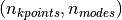
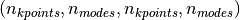
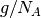
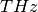
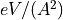
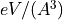
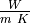

Introduction¶
κALDo is a versatile and scalable open-source software to compute phonon transport in crystalline and amorphous solids. It features real space QHGK calculations and three different solvers of the linearized BTE: direct inversion, self-consistent cycle, and RTA.
The algorithms are implemented using linear algebra operations on tensors, to take advantage of multithreading on GPU and CPU using Numpy, Tensorflow and optimized tensor libraries.
Using the Atomic Simulation Environment, κALDo can calculate the IFCs using several ab initio and molecular dynamics codes, thus enabling the use of first-principles DFT, empirical forcefields and semi-empirical tight- binding. A native LAMMPS interface is also available in the USER-PHONON package. Finally, through seamless integration with the hiPhive package, the IFC calculation can take advantage of compressing-sensing machine learning algorithms
The code is released open-source for the community to use and contribute with edits and suggestions. It is designed on modern software best practices, and we hope to provide a development platform to implement new theory and methods.
Quick Install¶
We recommend creating a new environment with Python 3.6, 3.7, or 3.8.
conda create -n kaldo python=3.7
and enable the environment
conda activate kaldo
conda install pip
kALDo installation can be done using pip
pip install git+https://github.com/nanotheorygroup/kaldo
Using pip and virtualenv¶
You can also install kALDO without using conda
pip3 install virtualenv
virtualenv --system-site-packages -p python3 ~/kaldo
source ~/kaldo/bin/activate
pip3 install git+https://github.com/nanotheorygroup/kaldo
Development mode¶
The best way to run examples, tests and to develop kaldo is to follow the quick install procedure, and add the following extra steps.
pip uninstall kaldo
make ~/develoment
cd ~/development
git clone git+https://github.com/nanotheorygroup/kaldo
export PYTHONPATH=~/development/kaldo:$PYTHONPATH
If you followed the steps in the quickstart and then uninstall kaldo, you will have all the dependencies correctly installed. The next lines are pulling the repo from Github and adding it to the PYTHONPATH.
If you want to make the last change in the PYTHONPATH permanent, you can also run
echo "export PYTHONPATH=~/development/kaldo:$PYTHONPATH" >> ~/.bashrc
Interfacing with Other Codes¶
LAMMPS library setup¶
In order to use LAMMPS with ASE, it needs to be compiled a lib
cd path/to/lammps/src
make yes-manybody
make yes-molecule
...
make mpi mode=shlib
Next, activate your environment
conda activate kaldo
or if you used virtualenv
source ~/kaldo/bin/activate
and finally install lammpslib using
make install-python
Update 07/2020: It you are having any issue with the July 2020 version of lammpslib, try using the October 2019 version.
LAMMPS executable setup¶
You can use LAMMPS executable directly, as illustrated in the example folder. For that purpose, you will need the LAMMPS user-phonon package by Charles Sievers to calculate the dynamical matrix and the third order interatomic force constants.
Quantum Espresso setup¶
In order to use QE with ASE, Set the environment variable:
export ASE_ESPRESSO_COMMAND="mpirun -np 4 /path/to/pw.x -in PREFIX.pwi > PREFIX.pwo"
Update 01/2021: It you are having any issue with ASE version 3.20+, try using ASE version 3.19.1.
See the ASE documentation for more info.
Output Storage¶
Default Storage¶
When using the storage formatted, kALDo stores the following dense tensor as formatted, human readable, files:
frequency. mode changes first k changes aftervelocity_alphaphysical_mode_<min_freq>_<max_freq>_<is_nw><temperature>/<statistics>/heat_capacity<temperature>/<statistics>/population<temperature>/<statistics>/<method>/<third_bandwidth>/<diffusivity_bandwidth>/conductivity_<alpha>_<beta>where the<third_bandwidth>/<diffusivity_bandwidth>folder is created only if those values are defined<temperature>/<statistics>/<diffusivity_bandwidth>/diffusivity<temperature>/<statistics>/<third_bandwidth>/<method>/mean_free_path<temperature>/<statistics>/<third_bandwidth>/lifetime<temperature>/<statistics>/<third_bandwidth>/bandwidth<temperature>/<statistics>/<third_bandwidth>/phase_space<diffusivity_bandwidth>flux_dense, whendiffusivity_thresholdis not specified.<diffusivity_bandwidth>/<diffusivity_threshold>/flux_sparse. Sparse only whendiffusivity_thresholdis specified.
The folder structure depends on the input parameters to the Phonon Object and in parenthesis is the shape of the tensor. All of the above observables are stored in a dense format, except for flux_alpha which is stored as formatted file in a index value format.
The following tensors are stored in raw binary format and help saving time when performing different simulations on the same sample.
_eigensystem (eigenvalues and eigenvectors)_dynmat_derivatives<temperature>/<statistics>/<diffusivity_bandwidth>/_generalized_diffusivity<temperature>/<statistics>/<third_bandwidth>/_ps_and_gamma_tensor<temperature>/<statistics>/<third_bandwidth>/_ps_and_gamma, when only RTA conductivity is required
Alternative Storage¶
Other storage options available are numpy and hdf5 where all the files are saved as one of those formats. Finally the memory option doesn’t store any permanent files.
Measurement |
Units |
|---|---|
Distances |
|
Masses |
 |
Frequencies |
 |
Potential Derivatives |
 or  |
Conductivity [] |
 |

Code Architecture¶

Main Features¶
Below we illustrate the main features of the code

Examples¶
Examples and the explanation on how to use them are located in the examples folder of the repo.
How to cite¶
If you have used kALDo, please cite the following article:
Barbalinardo, G.; Chen, Z.; Lundgren, N. W.; Donadio, D. Efficient Anharmonic Lattice Dynamics Calculations of Thermal Transport in Crystalline and Disordered Solids. J Appl Phys 2020, 128 (13), 135104–135112. https://doi.org/10.1063/5.0020443 also available open access on ArXiv: https://arxiv.org/abs/2009.01967
@article{kaldo,
author = {Barbalinardo, Giuseppe and Chen, Zekun and Lundgren, Nicholas W and Donadio, Davide},
title = {{Efficient anharmonic lattice dynamics calculations of thermal transport in crystalline and disordered solids}},
journal = {Journal of Applied Physics},
year = {2020},
volume = {128},
number = {13},
pages = {135104--12},
month = oct
}
Copyright¶
Copyright (c) 2020, Giuseppe Barbalinardo, Zekun Chen, Nicholas W. Lundgren, Davide Donadio
Acknowledgements¶

We gratefully acknowledge support by the Investment Software Fellowships (grant No. ACI-1547580-479590) of the NSF Molecular Sciences Software Institute (grant No. ACI-1547580) at Virginia Tech.
MolSSI builds open source software and data which serves the computational molecular science community. Explore MolSSI’s software infrastructure projects.
Other codes¶
We are thankful to the whole open-source community, and in particular we want to acknowledge some other great anharmonic lattice dynamics related projects. If using kALDo example, you If, while you are running kALDo examples, you use any of these codes, please don’t forget to cite them.
ASE: A. H. Larsen, J. J. Mortensen, J. Blomqvist, I. E. Castelli, R. Christensen, M. Dułak, J. Friis, M. N. Groves, B. Hammer, C. Hargus, E. D. Hermes, P. C. Jennings, P. B. Jensen, J. Kermode, J. R. Kitchin, E. L. Kolsbjerg, J. Kubal, K. Kaasbjerg, S. Lysgaard, J. B. Maronsson, T. Maxson, T. Olsen, L. Pastewka, A. Peterson, C. Rostgaard, J. Schiøtz, O. Schütt, M. Strange, K. S. Thygesen, T. Vegge, L. Vilhelmsen, M. Walter, Z. Zeng, and K. W. Jacobsen, “The atomic simulation environment—a python library for work- ing with atoms,” Journal of Physics: Condensed Matter 29, 273002 (2017).
LAMMPS: S. Plimpton, Fast Parallel Algorithms for Short-Range Molecular Dynamics, J Comp Phys, 117, 1-19 (1995).
Quantum Espresso: P Giannozzi, O Andreussi, T Brumme, O Bunau, M Buongiorno Nardelli, M Calandra, R Car, C Cavazzoni, D Ceresoli, M Cococcioni, N Colonna, I Carnimeo, A Dal Corso, S de Gironcoli, P Delugas, R A DiStasio Jr, A Ferretti, A Floris, G Fratesi, G Fugallo, R Gebauer, U Gerstmann, F Giustino, T Gorni, J Jia, M Kawamura, H-Y Ko, A Kokalj, E Küçükbenli, M Lazzeri, M Marsili, N Marzari, F Mauri, N L Nguyen, H-V Nguyen, A Otero-de-la-Roza, L Paulatto, S Poncé, D Rocca, R Sabatini, B Santra, M Schlipf, A P Seitsonen, A Smogunov, I Timrov, T Thonhauser, P Umari, N Vast, X Wu and S Baroni, J.Phys.:Condens.Matter 29, 465901 (2017)
HiPhive: The Hiphive Package for the Extraction of High‐Order Force Constants by Machine Learning, Fredrik Eriksson, Erik Fransson, and Paul Erhart, Advanced Theory and Simulations, (2019)
Project template¶
Project template from the Computational Molecular Science Python Cookiecutter.
How to contribute changes¶
Clone the repository if you have write access to the main repo, fork the repository if you are a collaborator.
Make a new branch with
git checkout -b {your branch name}Make changes and test your code
Ensure that the test environment dependencies (
conda-envs) line up with the build and deploy dependencies (conda-recipe/meta.yaml)Push the branch to the repo (either the main or your fork) with
git push -u origin {your branch name}Note that
originis the default name assigned to the remote, yours may be different
Make a PR on GitHub with your changes
We’ll review the changes and get your code into the repo after lively discussion!
Checklist for updates¶
☐ Make sure there is an/are issue(s) opened for your specific update
☐ Create the PR, referencing the issue
☐ Debug the PR as needed until tests pass
☐ Tag the final, debugged version
git tag -a X.Y.Z [latest pushed commit] && git push --follow-tags
☐ Get the PR merged in
Versioneer Auto-version¶
Versioneer will automatically infer what version is installed by looking at the git tags and how many commits ahead this version is. The format follows PEP 440 and has the regular expression of:
\d+.\d+.\d+(?\+\d+-[a-z0-9]+)
If the version of this commit is the same as a git tag, the installed version is the same as the tag, e.g. kaldo-0.1.2, otherwise it will be appended with +X where X is the number of commits ahead from the last tag, and then -YYYYYY where the Y’s are replaced with the git commit hash.